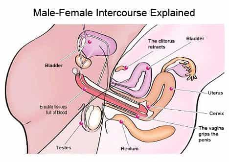

Daryush "Roosh" Valizadeh created ROK in October 2012. You can visit his blog at RooshV.com or follow him on Twitter and Facebook.


When it comes to women, nature bestowed only three roles upon them: reproductive sex, child rearing, and homemaking. A woman who engages in behaviors outside of those three roles is going against her biology and will experience suffering as a result.

The primary function of sex is to reproduce. The secondary function of sex is to experience pleasure. Through universal abortion and birth control, we have demoted the function of sex to one solely of pleasure. Sex is now a sterile act between two individuals who are often under the influence of alcohol or drugs and who were paired based on emotional short-term reasons that often come down to entertainment or boredom.
The reason that women excel in child rearing is because their brains are similar to that of a young child. For proof of this, you only need to witness an adult woman interacting with children. While a man may be stiff and awkward with the creature, a woman instantly adopts a child-like personality and voice to create a genuine bond. It’s through this bond that a woman can better sense a child’s needs and communicate with it.
Women have a unique taste and aesthetic that transforms any dwelling from a functional unit to a “home.” They add comfort, warmth, and cleanliness while men tend to focus on more utilitarian and practical aspects of living. A family home that has been touched by feminine hands is one where its occupants will be more comfortable.
A woman who is engaging in sex with a multitude of partners without any concern for reproduction, and who has less interest in child rearing than in surrogate activities like working in an office, dancing in nightclubs, or playing trivia games on her electronic device, and who is unwilling or unable to make a home comfortable for her family is going against her purpose. This may remind you of women you know.
The easiest way to answer that question is to examine the mental health of those individuals who have firmly denied their biology: homosexuals and transsexuals. Studies clearly show that these groups are the most mentally ill and suicidal out of the population (1, 2, 3, 4, 5). Denying your genetic makeup entails the highest risk of being a loon.
A woman cannot be happy or even content with life if she elects not to reproduce, raise children, or be a homemaker. Is it a coincidence that modern civilization is actively encouraging women to stray far from these three biological roles? Our current society is inverted, as those who rule over us have determined that it’s better to redirect feminine energy into something that benefits their own selfish ends.
Not only are women suffering more than in the past but men are suffering too, because they are forced to interact with broken women who deny their biology. Until we have women embracing their biological roles, this needless suffering will continue.
This article was originally published on Roosh V.
Read More: It’s Time To Make Men Strong Again